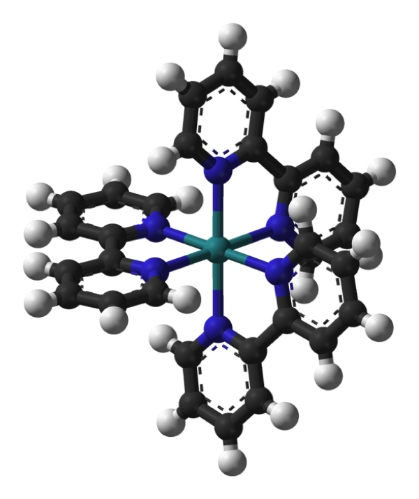
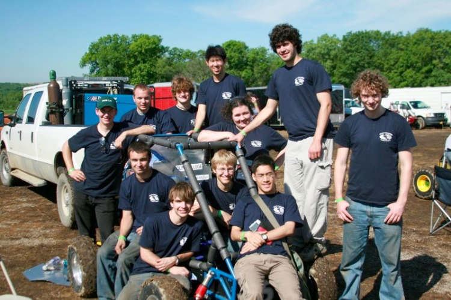

2008
| Autonomous Mapping Robot |
Oct 2008 - Dec 2008 |
I designed, built, and programmed a low-cost robotics
platform from the ground up that can autonomously map a
terrain and communicate wirelessly to other robots and
computers. I designed the electrical and mechanical systems
including part selection, PCB design, and system integration.

SolidWorks model of robot
|
|
final, assembled robot
|
front view
|
 |
Dan Grieneisen, Jacob Izraelivitz |
| CERN Detector Systems |
Jun 2008 - Aug 2008 |
During the summer of 2008, I worked with physicists from Oak
Ridge National Labs at the European Organization for Nuclear
Research (CERN). I helped integrate the front-end
electronics for the photon spectrometer (PHOS) and
electromagnetic calorimeter (EMCal) of A Large Ion Colidor
Experiment (ALICE).
|
engineering model of an array of EMCal supermodules on the support structure (source: CERN)
|
|
Large Hadron Colider near Geneva, Switzerland (source: CERN)
|
rendering of ALICE detector (source: CERN)
|
|
at the detector site
|

test setup for front-end electronics
|

PHOS module
|
|
EMCal data aquisition GUI
|

ROOT display of ALICE (source: CERN)
|
|
Dr. Terry Awes, Dr. David Silvermyr |
| Beat Detection Software |
Apr 2008 - May 2008 |
As a final project in our Modeling and Control class, a
classmate and I created a MATLAB program that would detect
the beat from audio and video files and would then adjust
the frame rate of the video so that the tempos of the two
samples were in sync.
|
spectrogram of audio clip from Africa by Toto
|
|
Daniel Grieneisen |
| OLED Synthesis |
Apr 2008 - May 2008 |
As an independent project in my Material Science course,
several classmates and I synthesized our own organic
light-emitting diode, or OLED, using the organic compound
Tris(bipyridine)ruthenium(II) (Ru(bpy)32+).
Our measured emission spectra matched other documented tests
and showed that the released photons had a wavelength
around 590 nm (visible orange light). We performed several
tests with the devices and noted the relationship between
brightness and film thickness.
|

model of Ru(bpy)32+ complex (source: Wikipedia)
|
|
initial test of OLED
|
thinner films are more effective
|

measured emission spectrum
|
|
OLED degridation (15 min, 30 V)
|
|
Keerthikk Omanakuttan, Albert Setjoadi, Arash Ushani |
| Miniature Cannon Casting |
Mar 2008 - Apr 2008 |
As a material science and historical study, several
classmates and I cast miniature bronze cannons modeled after
a Revolutionary-era 12-pound British cannon. We then bored
out and proofed the cannons in order to see how the proofing
process affected the microstructure of different alloys.
|
cannons cast in different bronze alloys
|
|
wax models used for casting
|
pouring molten bronze into mold
|
|
historical drawing of 12-pound British cannon
|
|
proofing of miniature cannon
|
etched sample showing dendritic microstructure
|
|
Annie Bowlby, Laura Firstenberg, Zach Kratzer |
| Baja SAE Autimotive Design |
Oct 2007 - Dec 2009 |
Interested by the inner workings of cars, I joined the
Olin College Phoenix Racing team.
Along with a team of other engineering students, we designed
and built an off-road vehicle in our spare time to compete
in the SAE Mini Baja competition. As part of the team
charged with designing the chassis, I helped design a
rules-compliant frame and performed a series of structural
engineering tests (finite element analysis). I further
helped with machining and designing the electrical system.

finite element analysis of 2008 chassis
|

vehicle during testing
|

team at competition
|

final adjustments
|

vehicle at competition
|
|
team of 20+ students |
previous year | timeline | next year